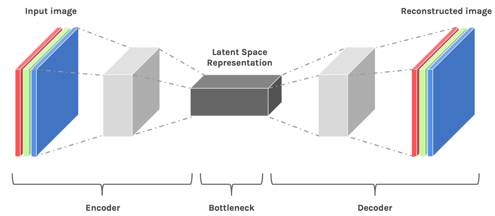
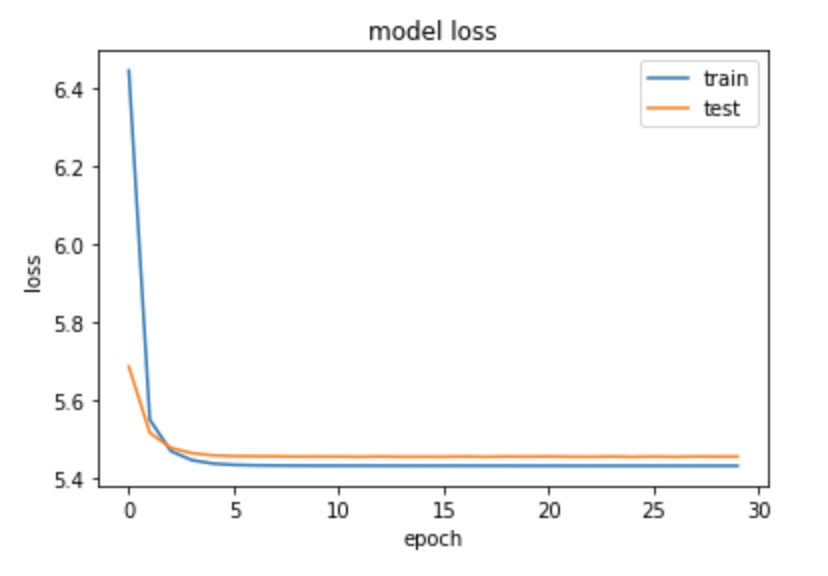
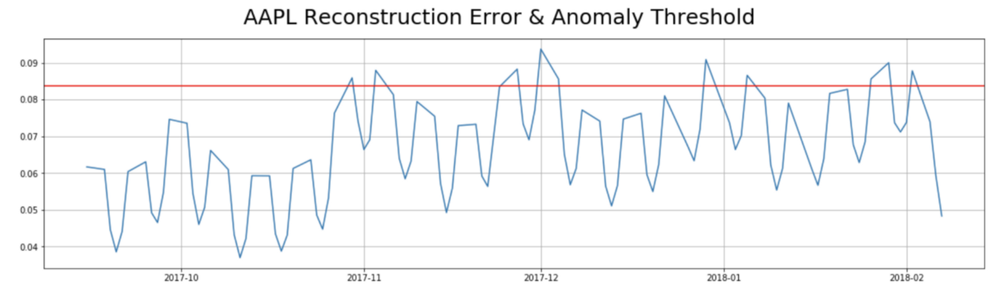
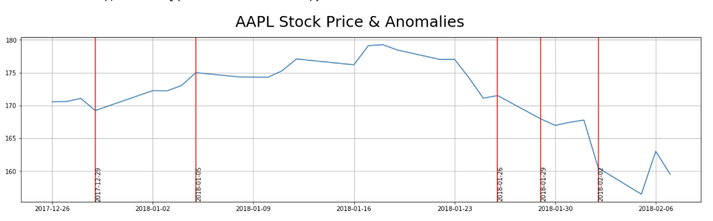
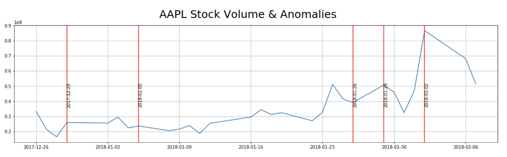
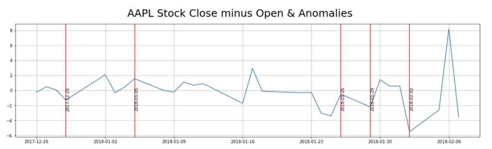

From Financial Compliance to Fraud Detection with Conditional Variational Autoencoders (CVAE) and Tensorflow
Resources
By Manuel Amunategui & Priya Dwivedi

Highlighting market-action anomalies on AAPL
Just like Fast R-CNN and Mask-R CNN evolved from Convolutional Neural Networks (CNN), Conditional Variational AutoEncoders (CVAE) and Variational AutoEncoders (VAE) evolved from the classic AutoEncoder. CVAEs are the latest incarnation of unsupervised neural network anomaly detection tools offering some new and interesting abilities over plain AutoEncoders.
Anomaly Detection on Financial Data
In this article, we’re going to see how a CVAE can learn and generate the behavior of a particular stock’s price-action and use that as a model to detect unusual behavior. A CVAE can generate millions of data points and whenever real price action veers too far away from the bounds of these generated patterns we know that something different is happening.
The AutoEncoder Can Reconstruct Data
We’ll start with the root model, the AutoEncoder is an unsupervised neural network that combines a data encoder and decoder. The encoder will take data and learn to reduce it in an efficient manner into a lower-dimensional space, known as the latent space representation.
The decoder will take this reduced representation and blow it back up to its original size. This comes in handy around file reduction for efficient storage and transportation while still retaining the original (or good-enough) data information.
This is also used in anomaly detection. You train a model, feed new data into the encoder, compress it, then observe how well it rebuilds it. If the reconstruction error is abnormally high, that means the model struggled to rebuild the data and you may have an anomaly on your hands.

(source: Julien Despois/Hacker Noon — Latent space visualization — Deep Learning bits 2)
The Variational AutoEncoder (VAE) Can Generate Data
The variational AutoEncoder (VAE) adds the ability to generate new synthetic data from this compressed representation. It is still an unsupervised model which describes the distribution of observed and latent variables from which it can learn to generate new data (versus only offering a reconstruction like the classic AE does). It does so by learning the probability distribution of the data and we can thus generate new data by using different latent variables used as input.
The Conditional Variational AutoEncoders (CVAE) Can Generate Data by Label
With the CVAE, we can ask the model to recreate data (synthetic data) for a particular label. In the example of stock market data, we can ask it to recreate data for a particular stock symbol. When the model is trained, we pass the label to both the encoder and decoder, not to become a supervised model, but to add the ability to ask the decoder to generate new data down to the granularity of labels.
Code and inspiration based on the following two great resources:
The CVAE Approach
We will use Keras and TensorFlow to build the AutoEncoder and we will use Nick Normandin’s blog post on Conditional Variational Autoencoder.
(Please refer to Nick’s post for additional details and theory behind this approach).
Preparing the data
Stock market data from Kaggle/GitHub
The dataset represents 5 years of end-of-day data from member stocks of the S&P 500. It can be found on Kaggle. It contains the date, high, low, open, close and volume data points typically found in stock-market trading data.
# Load locally
stock_data_file = 'data/sandp500/all_stocks_5yr.csv'
# Load directly from GitHub
stock_data_file = 'https://raw.githubusercontent.com/CNuge/kaggle-code/master/stock_data/all_stocks_5yr.csv'
stocks_df = pd.read_csv(stock_data_file, parse_dates=['date'])
stocks_df.head()

Feature Engineering
To capture some of the time-series elements of stock-market data, we add a few moving averages, the closing minus the opening price, and the day of the week and month.
# apply some more quantitative features but make sure it doesn't spill from one stock to another
market_data = {}
for symbol in dow_30_symbols:
temp_df = stocks_df[stocks_df['Name'] == symbol]
open = temp_df['open']
high = temp_df['high']
low = temp_df['low']
close = temp_df['close']
volume = temp_df['volume']
close_avg_3 = pd.rolling_mean(temp_df['close'], 3)
close_avg_5 = pd.rolling_mean(temp_df['close'], 5)
close_avg_10 = pd.rolling_mean(temp_df['close'], 10)
open_close = temp_df['close'] - temp_df['open']
day_ = temp_df['day']
day_of_month = temp_df['day_of_month']
date = temp_df['date']
# day of month
market_data[symbol] = [open, high, low, close,
volume, close_avg_3, close_avg_5, close_avg_10, open_close, day_, day_of_month, date]
Normalization
AutoEncoders like to have all of its features normalized.
# Take all numerical cols and normalize data b/w 0 and 1
df[features] = df[features].apply(lambda x: (x - x.min()) / (x.max() - x.min()))
Building the Conditional Variational AutoEncoder
Sizing the batches to 50 and the latent space to 2 keeps things simple and allows for visualization if needed in a traditional two-dimensional graph.
m = 50 # batch size
n_z = 2 # latent space size
encoder_dim = 5 # dim of encoder hidden layer
decoder_dim = 5 # dim of decoder hidden layer
decoder_out_dim = X_train.shape[1]
activ = 'relu'
optim = Adam(lr=0.001)
n_x = X_train.shape[1]
n_y = y_train.shape[1]
Modeling
We use a fully-connected, feed forward neural network from the “keras.models” API.
## Concatenate the input and the label for the CVAE
inputs = concat([X, label])
encoder_h = Dense(encoder_dim, activation=activ)(inputs)
mu = Dense(n_z, activation='linear')(encoder_h)
l_sigma = Dense(n_z, activation='linear')(encoder_h)
## Define the latent space - z layer
def sample_z(args):
mu, l_sigma = args
eps = K.random_normal(shape=(m, n_z), mean=0., stddev=1.)
return mu + K.exp(l_sigma / 2) * eps
Finally, we compile the CVAE with the various loss functions needed and run it with an allocation of 70 epochs.
## Compile function
cvae.compile(optimizer=optim, loss=vae_loss, metrics = [KL_loss, recon_loss])
# Run CVAE
n_epoch = 70
cvae_hist = cvae.fit([X_train_trun, y_train_trun], X_train_trun, verbose = 1, batch_size=m, epochs=n_epoch,
validation_data = ([X_valid_trun, y_valid_trun], X_valid_trun),
callbacks = [EarlyStopping(patience = 5)]).history
The model converges nicely and the early stopping feature kicks in around 30 epochs.

Evaluating the CVAE on AAPL
The approach we will use is to evaluate the model by looping through the test dataset, generate a new instance of market data based on each data point and compare the quality between both. We also consider anything above the 90th percentile reconstruction error as anomalous (this is very subjective and will depending on what your goals are).
## Loop through each row of our single-stock dataset and calculate the reconstruction error
recon_on_generated_stock = []
max_contributor_stock =[]
for i in range(z_aapl.shape[0]):
z_ = z_aapl[i]
identifier = int(np.argmax(stock_dummy[i]))
vec = construct_numvec(identifier, z_)
test_pred = decoder.predict(vec)
transpose = test_pred.T
transpose = np.squeeze(transpose)
actuals = df_stock[features].iloc[i]
recon_error , max_col = recon_error_cal(actuals, transpose)
## Add this error to recon list
recon_on_generated_stock.append(recon_error)
max_contributor_stock.append(max_col)
recon_se = pd.Series(recon_on_generated_stock)
anomaly_threshold = np.percentile(recon_se, 90)
print('anomaly_threshold:', anomaly_threshold)
anomaly_threshold: 0.083699166755841
Looking for Anomalies in AAPL
And now for the intersting part, let’s use the CVAE anomaly threshold violations on AAPL to find anomalies.

We then simply need to attach the loss to the data set and pull anything that violates the 90th percentile threshold. Keep in mind that anomalies could come from any feature or feature combination. Below are the anomalies overlaid on top of price, volume and close minus open:



Doing a simple search in an attempt to tie a story to each anomaly, this is what I found:
2018–02–02
“Dow plunges 666 points — worst day since Brexit”
2018–01–29
“Why Did Apple (AAPL) Stock Dip Today?”
2018–01–05
“Apple ( AAPL ) rose Friday after the tech giant today said it will soon be providing Mac and iOS users with a patch addressing the Meltdown and Spectre security issues.”
2017–12–29
Apple Apologizes for Slowing iPhones